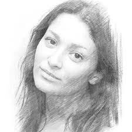

Hobby
Pencil Drawing
Why I Enjoy It
Drawing with pencils has always been a relaxing and rewarding hobby for me. I enjoy the level of control and precision it offers, and how something as simple as a graphite pencil can be used to create detailed, expressive artwork. It’s a creative outlet that helps me slow down, focus, and observe the world more closely.

Tools I Use
- Graphite Pencils: Ranging from 9H (hardest) to 9B (softest) for different textures and shading
- Mechanical Pencils: For fine details and line consistency
- Erasers:
- Kneaded Eraser: For subtle lightening and highlights
- Vinyl Eraser: For clean, precise erasing
- Blending Tools:
- Tortillons and Blending Stumps for smooth gradients
- Cotton Swabs and Tissue for broader blending
- Sketchbook: Acid-free, medium-to-heavyweight paper with slight texture
- Fixative Spray: To preserve finished drawings and prevent smudging
Techniques I Practice
Shading & Gradient Control
Practicing smooth transitions from light to dark to create volume and depth.Hatching & Cross-Hatching
Using lines and layered strokes to build tonal value and texture.Contour Drawing
Focusing on the outline of subjects to capture form and proportion accurately.Reference Drawing
Drawing from life or photographs to improve observation and realism.Texturing
Developing techniques to render materials like skin, fabric, hair, and metal using pencil strokes.Negative Space Drawing
Focusing on drawing the space around an object to improve spatial awareness and composition.
Challenges Faced
- Achieving Realism: It can be difficult to balance detail without overworking a drawing.
- Smudging: Graphite easily smudges, requiring careful hand positioning and occasional fixative application.
- Proportions & Perspective: Maintaining accurate anatomy and depth, especially in portraits and architecture.
- Time Management: Pencil drawing can be time-consuming, especially for high-detail pieces.
Personal Outcomes
- Improved hand-eye coordination and observation skills
- Deeper appreciation for light, form, and visual storytelling
- A growing portfolio of artworks that reflect my progress
- A relaxing and screen-free creative practice I can return to anytime
Favourite tutorial
“Drawing is not what one sees but what one can make others see.” — Edgar Degas